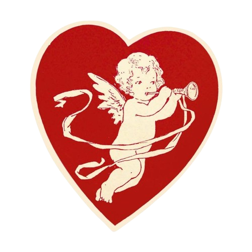

contexto histórico
O Dia dos Namorados é uma ocasião especial reservada para os casais expressarem seu amor e cuidado mútuo. No Brasil, é comemorado em 12 de junho, ao contrário da maioria dos países, onde é celebrado em 14 de fevereiro. Essa diferença se deve à origem da comemoração no Brasil, que remonta a 1949, quando o empresário João Doria idealizou uma campanha que sugeria a data como uma oportunidade para demonstrar amor por meio de presentes, aproveitando o contexto de baixas vendas no mês de junho. O slogan da campanha era "não é só com beijos que se prova o amor". A iniciativa foi um sucesso no país, oficializando-se como a data para demonstrar afeto entre os casais. Atualmente, junho é um dos meses mais lucrativos para o comércio.
Nos Estados Unidos, o Dia dos Namorados é uma homenagem a um padre romano chamado Valentim, que, no século III, foi condenado à morte por desobedecer às ordens do imperador Cláudio II, que havia proibido a realização de casamentos, acreditando que homens casados não seriam bons soldados. Valentim, porém, continuou a celebrar matrimônios, pois acreditava que o casamento estava nos planos divinos para os seres humanos, desafiando assim o decreto do imperador. Quando sua conduta foi descoberta, ele foi sentenciado à morte, em algum momento do mês de fevereiro, de acordo com estudos históricos. Além disso, o símbolo do Dia dos Namorados, o Cupido, remonta à mitologia romana, sendo associado ao amor e à paixão. A tradição de trocar cartões e presentes neste dia também tem raízes antigas, remontando ao século XVIII na Inglaterra, com o envio de cartões conhecidos como "valentines". A partir daí a prática se espalhou para outros países, tornando-se um costume popular em todo o mundo.

.png)